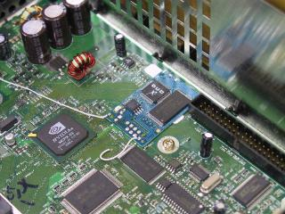

MODDING
Microsoft wants the software monopoly on the Xbox
platform. Nobody should be able to publish unlicensed software, because
Microsoft wants to gain money with the games to amortize the hardware
losses, and because they do not want anyone to release non-Internet
Explorer browsers and non-Windows Media Player multimedia software.
Of the three consoles of its generation, Xbox, Playstation 2 and
GameCube, the Xbox is the one whose security system has been
compromised first, the one that is now easiest to modify for a
hobbyist, the one with the most security system workarounds, and the
one with the most powerful hacks.
Modchip Buying - What to look for for the
LEAST problematic install!
Installation Samples
Videos
Extending the life expectancy of a
modchipped v1.6 xbox.
D0 Locations
Top 10 reasons for Modding
XBOX MAINBOARD UPGRADES
History of M$ Fixes & How Hackers WON!
When purchasing
a MODCHIP, try to find one with a BIOS already flashed into the
chip. This will take one of the most commonly failed
modchip steps out; FLASHING THE BIOS!
Here is a SAMPLE (Aladdin Extreme) list of items to look for when
looking at the features of a modchip:
Pre
flashed with the EVOX EXTREME (This is HARD to find, and is
illegal!)
EVOX EXTREME HDD Patch - install a
bigger hard disk (Now at the 2000 GB Limit)
Easy to install and minimal soldering
skill required (only 3 wires and the LPC pin header)
One ModChip for ALL current
existing XBox versions and regions
Plays DVD / CD Imports
Plays DVD-R / CD-R Backups
Plays original and Backup DVD
Movies
Plays unsigned code - Run Debug
Executables
LBA48 Hack (If
you plan on using a larger than 137GB Hard Drive)
No-patch hack 1
No-patch hack 2
IGR function enabled (In Game
Reset)
ETH function enabled (Eject Trick
Hack)
Auto patch new media flag Titles
Macrovision Off
DVD Reset
EvoX HDD Patch - install a bigger
hard disk (not bigger than 2000 GB
/ Or Not bigger than 137GB no LBA48)
Auto detect EvoX Dashboard
Built in Mod-disable switch for
X-BOX Live Disc (ON / OFF modus to deactivate the Modchip function)
ActionReplay ready (for all who
use AR cheatcodes)
Does not affect the original
functionality of your XBox
Flash upgradable
Compatible with all XBox versions (all NTSC and all PAL)
Modding
your Xbox is Illegal! - Piracy is one of the main reasons it is illegal!
The first thing you want to do is decide what CHIP you want to
install. There are many avaialble, and make sure your Xbox
version is supported.
There is no real guide to installation, except the instructions you get
from the place you bought it from. Basic solder skills and a
steady hand is a plus! The instructions will help you
determine the version of Xbox for the install, and that isn't always
easy.
Solderless adapters are not as reliable as wired/soldered in. If
you plan on using a solderless mod, then your xbox should not be moved
around a lot.
Most Modchips will not come with a BIOS, other than a basic Cromwell
bios. You will need to "flash" the bios with EvoX, or other bios
for loading a Dashboard other than the one your Xbox has on it.
Cromwell and the related "FlashBIOSes" do not boot backups or original
Xbox games. They cannot boot dashboards, or any XDK/OpenXDK written
homebrew apps.
The very first thing you should do, after modding an Xbox, is BACK UP
THE HARD DRIVE, and the EEPROM!!! If you do not, no one
will feel sorry for you when you say the Microsoft Dashboard, this and
that doesn't work anymore. Once the mod chip is installed, and
verified working, you need to boot to a DVD with an FTP client, like
EvoX's Remote-X. You must back up your entire C Drive to your PC
somewhere. Then use the MENU ITEM that says BACKUP, all that does
is an eeprom backup, and HDD KEY backup, it is not an entire backup if
drive C.
Do not put ANYTHING in your original drive's E partition, it's only
around 700MB if that, is for game saves! If you plan to
upgrade the hard disk, you can put some applciations there. It
should be about 5GB with a larger HDD.
Evolution-X is really two different things: a Modchip BIOS, and a
replacement dashboard. Technically, Evolution-X is the dashboard, and
Evo-X refers to the BIOS.
The BIOS Size for a simple mod chip is 256K. You can get 512K and
1025K bios chips so that you can switch between a different bios, or
use a bios with many features.
A Bios is an EEPROM (Electrically Erasable Programmable Read Only
Memory), also known as an E-Square (because an EEPROM has four cells):
is an EPROM chip that is erasable at RUNTIME. For example, you
can update the PROGRAM or update the configuration programmatically,
without taking the device out of circuit to erase and reprogram.
EEPROM cells typically have a finite service life, which means that
they do wear out. Usually, reading them doesn't wear them out, just
writing to them. They are characterized both by RETENTION, and WRITE
CYCLES (ENDURANCE). RETENTION means, if you programmed it once
today, how long would the device retain the data. WRITE CYCLES means
how many times you can write to a particular cell and be guaranteed
that it will reliably store the data. WRITE CYCLE LIMITATIONS are
typically 1 or so million for cheaper parts, 10 or so million for more
expensive parts.
Xbox v1.0/v1.1 have an
8Mbit (1024k) onboard bios chip, of different brands. This is
nice, because you CAN bank switch this bios if need be. You
could, essentally, have the original bios and a modded bios in the same
chip. If you have seen the ERROR section for LED FLASH errors,
the bios may be stored in all banks of this chip, we knoe at least TWO
banks do. That would be 1024/4 = four cells of 256k, so
essentially, four duplicates of the bios. So, if one bank goes
bad, you can switch to one of the others and the Xbox would be fixed.
Xbox v1.2/v1.3/v1.4/v1.5/v1.6 have a 2Mbit (256k) bios chip of
different brands. Once this goes, you do not have a quick fix
like with the 1MB bios as described above. This can also be
flashed with a MODDED bios, but if it doesn't take, you now have a
brick.
MOD CHIP INSTALL EXAMPLES
Here is a picture of an Aladdin Chip
soldered to the LPC Bus:
Four more wires need to be soldered:
L2 goes to Pin40 of the IDE BUS
L1 goes to left side of R2G10
BT goes to right side of R3G3
D0 Goes to D0 Point
ALADDIN INSTALLED WITH WIRE TO D0 POINT
(To V1.2-V1.5 Xbox)
Here
is a Duox Mod Chip that is WIRED in:
This
is the DuoX Soldered to the MainBoard, and showd D0 Point

The other wire is BT, but this one goes to the Eject Button.
A
DuoX installed with a Header:
ALTERNATE
D0 FOR V1.6 XBOX
This is an alternative LFRAME (D0) point on the backside of a v1.6
motherboard that's a lot easier to solder then the one on top (a 'via')
near the Xyclops chip.
VIDEOS
Soldering a
D0 Point on V1.2
Xbox
Soldering
the LPC
Wires + D0 Install
Install:
Xenium
SP / Solderless 1.6
Desoldering:
A
Surface Mounted Chip
D0 V1.0 and V1.1
D0 V1.2 to V1.5
The history of Microsoft's reactions to the font
vulnerability is the perfect lesson of how to do it wrong.
1. After MechInstaller had been released, Microsoft fixed the buffer
vulnerability in the Dashboard and distributed this new version over
the Xbox Live network and shipped it with new Xboxes.
2. For the hackers, this was no major problem: It was possible to
downgrade the Dashboard of a new Xbox to the vulnerable version. Just
run Linux using a savegame exploit, and "dd" the old image. Some people
felt downgrading on new Xboxes was not piracy, because after all,
Microsoft upgraded Xbox Live users' hard disks to the new version
without asking.
3. As the next step, Microsoft blacklisted the old Dashboard in the new
kernel. It was impossible to just "dd" an old Dashboard image onto
newer Xboxes.
4. Still no major problem for hackers: The second executable on the
hard disk, "xonlinedash", which is used for Xbox Live configuration,
had the same bug, so it was possible to copy the old "xonlinedash" and
to rename it to "xboxdash" to make it crash because of the faulty fonts.
5. Microsoft consequently
blacklisted the vulnerable version of "xonlinedash".
6. Again, no major problem for hackers: All Xbox Live games come with
the "dashupdate" application, which adds Xbox Live functionality to the
Dashboard for the first Xboxes which came without it. This update
application has the same font bug, and it can be run from hard disk. So
it is possible to copy the file from any Xbox Live game DVD, rename it
to "xboxdash" and let it crash.
7. Microsoft could not blacklist
this one. Xbox Live enabled games run the update application every time
they start, making sure the Xbox has the Xbox Live functionality.
Blacklisting "dashupdate" would break these games.
The security system of the
Xbox has been a complete failure, the hackers won.